Event extraction by template matching¶
| Author: | Christoph Schmidt-Hieber (christsc at gmx.de) |
|---|---|
| Date: | 08 November, 2017 |
Introduction¶
To isolate individual events such as EPSCs or EPSPs from recorded data, Stimfit uses a template matching algorithm as described by Jonas et al. (1993) [1], with some implementation details adopted from Clemens and Bekkers (1997) [2]. The template consists of a waveform 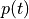 with a length of  sampling points that represents the time course of a typical event. The template is slid over the trace of recorded values 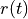, and at each sampling point with index
sampling points that represents the time course of a typical event. The template is slid over the trace of recorded values 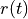, and at each sampling point with index  , it is multiplied by a scaling factor
, it is multiplied by a scaling factor  and an offset
and an offset  is added or subtracted so that the sum of squared errors 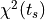 between the trace and the template is minimized:
is added or subtracted so that the sum of squared errors 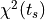 between the trace and the template is minimized:
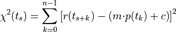
As can be seen from this equation, this amounts to the fairly simple operation of fitting a straight line that relates and at every sampling point.
Finally, some detection criterion has to be applied to decide whether an event has occurred at a sampling point. Two options are available in Stimfit: Jonas et al. (1993) [1] suggest to use the linear correlation coefficient between the optimally scaled template and the data, whereas Clements and Bekkers (1997) [2] compare the scaling factor with the noise standard deviation.
A practical guide to event detection¶
In practice, the following steps need to be performed to extract events with Stimfit:
- Create a preliminary template by fitting a function to a single, large and isolated event.
- Use this preliminary template to extract some more exemplary large and isolated events using a high detection threshold.
- Create a final template by fitting a function to the average of the exemplary events.
- Extract all events with the final template using a low detection criterion threshold.
- Eliminate false-positive, add false-negative events.
This procedure will be explained in some more detail in the following sections.
Create a preliminary template¶
In general, the template waveform can be of arbitrary shape. A typical way of creating such a template is to fit a function with a time course matching the event kinetics to some exemplary events. For example, EPSCs can typically be modeled with the sum or the product of two exponential functions [3]. In practice, a robust estimate for a template can be obtained using an iterative approach, which will be illustrated here using a recording of miniature EPSCs that you can download here.

Fig. 21: Creation of a “bait” template.
First, we fit a function to a single large an isolated event to create a preliminary “bait” template. In this case, we will use the EPSC that can be found roughly between t = 20990 ms and t = 21050 ms. Then, we fit the sum of two exponential functions with a delay to this EPSC. To obtain the same template as in the example, you can call the function preliminary from the minidemo module that comes bundled with Stimfit
>>> import minidemo
>>> minidemo.preliminary()
This will take care of the appropriate cursor positions and the biexponential fit. If you prefer, you can use the fit settings dialog, as described in chapter 1 (Fig. 16).
Extract exemplary events¶
We now use the bait example to fish some more large and isolate events. Choose “Analysis”->”Event detection”->”Template matching…” from the menu.

Fig. 22: Event detection settings.
In the dialog that will pop up (Fig. 22), you can set the threshold for the detection criterion. Since we want to extract some large and isolated events during this first pass, we set this to a high number, say 10, using the template scaling factor (Clemens and Bekkers, 1997). Click “OK” to start the event detection. When finished, press F to fit the whole trace to the window. The detected events will be marked by blue arrows in the upper part of the window, and blue circles will indicate the peak values of the detected events (Fig 23).

Fig. 23: Detected events.
To view the isolated events in a new window, you have to switch to the event editing mode, either by pressing E or by activating the corresponding button in the toolbar (Fig. 24). When you now click on the trace with the right mouse button, a menu will show up. Select “Extract selected events” from this menu. this will put the exemplary EPSCs into a new window.

Fig. 24: Switching to event editing mode.
Create the final template¶
We now create the average of all extracted events, as explained in chapter 1. Then, we fit a biexponential function to the average, as explained above for the single EPSC. Remember to set the baseline, peak and fit window cursors appropriately before performing the fit, and to update all calculations. Again, you can make use of a function from the minidemo module to set the cursors and perform the fit:
>>> import minidemo # if you have not imported it already
>>> minidemo.final()
The final template should look similar as shown in Fig. 25

Fig. 25: Creating a final template.
Extract all events¶
Go back to the original file (minis.dat). Extracting all events with the final template is done in nearly the same way as described above for the preliminary template. However, you have to choose the correct template in the event dialog: The final template in this case is the second on the list (Fig. 26). For this final run, we will lower the detection threshold to a value of 3, as suggested by Clements and Bekkers (1997).
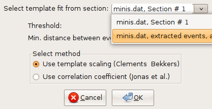Fig. 26: Selecting the final template.
Edit detected events¶
Usually, the detected events have to be screened visually to remove false-positives and add false-negatives. Removing false-positives is done by unselected the checkbox next to the arrow indicating an event (Fig. 23). To add false-negatives, you have to switch to the event-editing mode (Fig. 24) and then right-click on the trace at the at the position where the event starts. from the context menu that will pop up, select “Add an event that starts here” (Fig. 27). To efficiently screen the whole trace, it is convenient to use Shift and left arrow at the same time. this will move the trace left by the width of one window. Once you are done with editing, choose “Extract selected events” from the context menu.
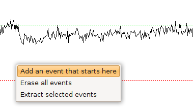Fig. 27: Adding a false-negative event.
Analyze extracted events¶
If you used the same settings as suggested above, 97 events will be extracted. You will find a table on the left of the traces: This will show you the time of onset of the events and the inter-event intervals. Usually, you will want to apply some further analysis to the extracted events. To do so, you first have to adjust the baseline, peak and fit cursors. Again, there is a function in the minidemo module taking care of that:
>>> minidemo.batch_cursors()
To analyze all traces efficiently, you can now perform a “batch analysis” on all traces at once: First, select all traces, either using stf.select_all() from the shell, or “Edit”->”Select all traces” from the menu or pressing Ctrl + A. Then choose “Analysis”->”Batch analysis” from the menu.

Fig. 28: Batch analysis settings.
From the dialog (Fig 28) choose the analysis functions that you want to apply to your data. Click “OK” once your are done. A new table will appear to the left of the traces. You can copy and paste values from the tables to spreadsheet programs for further analysis.
Adjusting event detection settings¶
| Problem | Solution |
|
|
| [1] | (1, 2) Jonas P, Major G, Sakman B. (1993) Quantal components of unitary EPSCs at the mossy fibre synapse on CA3 pyramidal cells of rat hippocampus. J Physiol. 472, 615-663. |
| [2] | (1, 2) Clements JD, Bekkers JM. (1997) Detection of spontaneous synaptic events with an optimally scaled template. Biophys J 73:220–229. |
| [3] | Note that the product of two exponentials 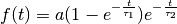 can equivalently be expressed as the sum of two exponentials: 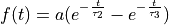, with 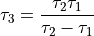. |